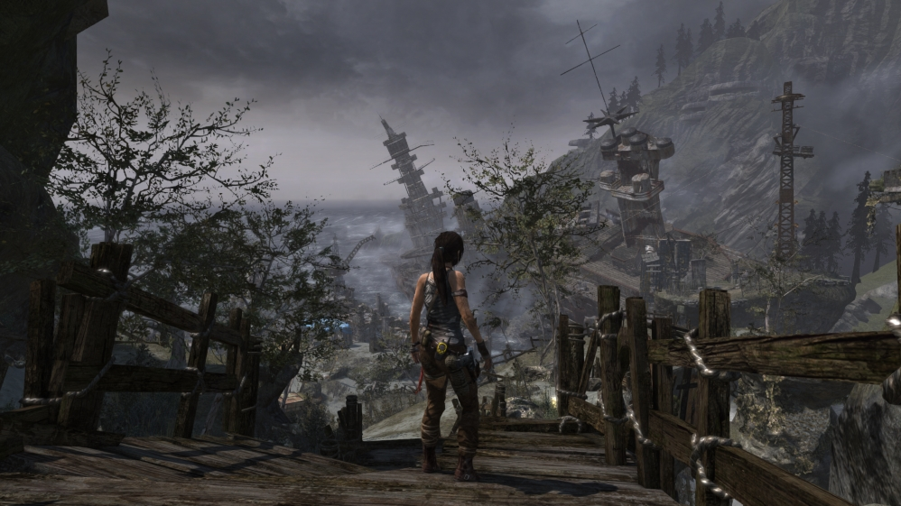

До речі, фанатом серії став у 2013 році коли вийшла саме ця гра і вирішив пройти усі попередні щоб, не дай боже, не пропустити якусь деталь із життя головної героїні. Огляди найпершої гри напишу згодом, коли знайду час пройти її ще раз.
У попередніх іграх Лара завжди шукала пригод на свою п'яту точку. І це буде її перший раз. З побаченого в трейлері ви вже, мабудь, здогадалися що все починається на кораблі на якому Лара разом з іншими членами команди щось шукають. Знайдуть вони зовсім не те що шукают, звісно. Раджу вам пограти і побачити все на власні очі а я лише спробую вас переконату у тому що це треба зробити навіть якщо ви будете читати цей огляд у 2023 році або навіть пізніше.
Причина перша - сюжет. Зауважте, що порядок не не означає важливість. Те, що відбувалося в ігровому світі постійно викликало у мене питання "Це щось потойбічне чи вони просто намагаються зробити так щоб я подумав, що це щось потойбічне. Спочатку гра здалася доволі реалістичною в тому сенсі, що нашими ворогами були лише якісь бандюги, що живуть на острові або шукають те саме, що і ми. Щобільше я грав то більше розумів, що відбувається щось підозріле. Закликаю вас шукати документи, яких на острові чимало. Для мене вони були досить вагомим додатком до основної історії і допомогли мені зануритися в неї навіть більше.
Я додав би підзаголовок "Становлення розкрадачки гробниць" враховуючи, що наступна частина називається "Rise of the Tomb Raider" і я наіть не знаю як перекласти таким чином, щоб передати зміст.
Так чи інакше, емоційна складова присутня впродовж усієї гри і я постійно переживав за Лару і робив усе можливе щоб вона виживала якнайдовше. Досягти такого емоційного зв'язку іграм вдається досить рідко.

Ґеймплей. Відчуття від гри просто неймовірні. Рухи головної героїні дуже плавні та природні. Використовувати зброю - суцільне задоволення. Арсенал подібний до всіх попередніх ігор (можливо менший) але більш ніж достатній, щоб задовольнити потреби шанувальників пригодницького жанру. Види зброї повністю підібрані під реалії ігрового середовища і це тільки підсилює певне відчуття реалізму. У грі можна лазити по скелях і кататися на моузці і взагалі багато різних дрібниць та деталей.
Звісно, очікуйте і на різні пазли та секрети як і в будь-якій грі серії. Якщо вам довподоби шукати різні схованки то для вас іх буде вдосталь.
Різноманітних ворогів у грі достатньо і позіхати від нудьги вам не доведеться. Кидатися на них сторч головою не треба і не завжди можна тож можна навіть трохи пограти з ними у хованки. Якщо вони вас знайдуть то буде непереливки але грати тільки стелс не обов'язково.
Окремо хочу розповісти про апгрейди. Прокачувати можна навички Лари і зброю. Для першого треба просто грати. Якщо знайдете таємні гробниці то новго рівня зможете досягти раніше. А ось для другого треба шукати деталі. Шукати треба добре і винагорода буде гарна. Для апгрейдів доведеться вибрати які зміни ви хочете зробити: можна збільшити точність стрільби але доведеться пожертвувати швидкістю стрільби.
Підтримка геймпада. Я надаю перевагу грі саме з геймпадом і у Tomb Raider схема управління була і для клавіатури і для геймпаду. Все було зрозуміло і зручно. Ціляти ворогам у макітру було досить просто і я жодного разу не відчув потяг взяти до рук мишу. Однак у мережевій грі мере просто розчавили і довелося таки переключитися щоб отримати кілька досягнень.
Доречі, графічно гра просто вражає і не потребує багато графічної потужності. Відключив лише режим роздільного волосся бо воно того не варте та й нема коли мені розглядати окремі волосини на голові Лари. Надодачу, навколишнє середовище виглядає дуже гарно і відстань на якій видно різні об'єкти не менш вражаюча. У грі змінюється день і ніч і від цього змінюється агресивніть деяких тварин.
Ну і Лара, звісно, виглядає просто приголомшливо. Навіть поранена, виснажена і налякана вона не втрачає своєї жіночності і краси.
І наостанок про те, без чого не можна створити гру з чудовою атмосферою - музика і звуковий супровід загалом. Я навіть не здивований, що музика просто неймовірна. Якось дивився відео про те ак композитор створював усі ці звуки і музику. І все це дійсно працює разом щоб ви насолодились кожною миттю гри.
Якщо ви досі не грали в Tomb Raider то зараз її можна купити за копійки на розпродажі або навіть на повну ціну. Я вже купив Rise of the Tomb Raider і напишу огляд коли знайду час її пройти.
Реклама